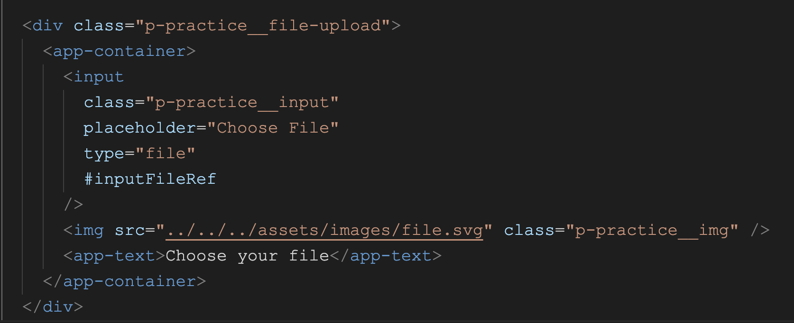
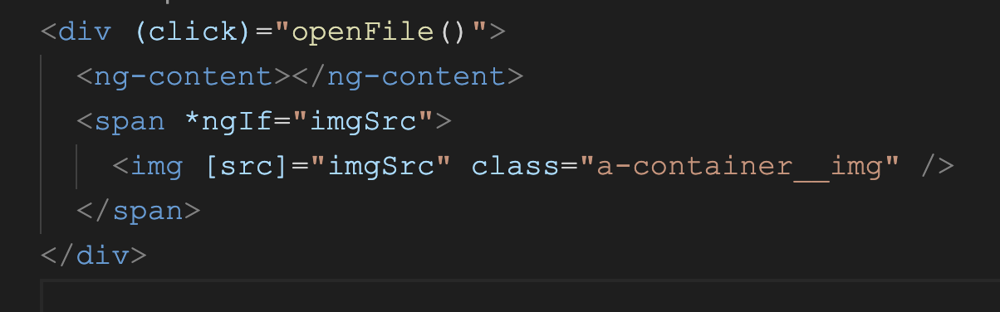
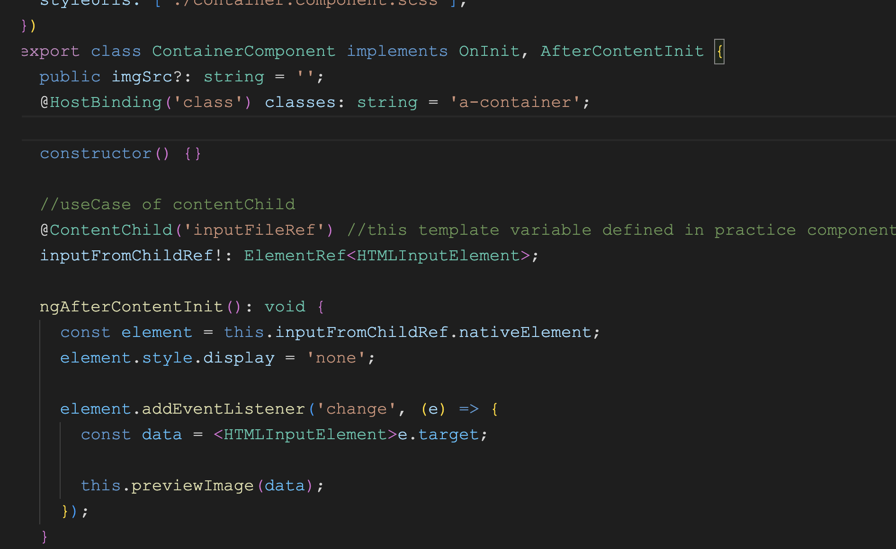
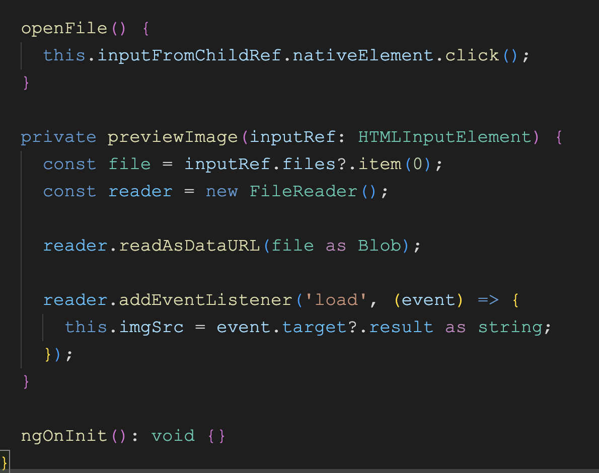

Angular 14 Concepts
@contentChild
UseCase of @contentChild decorator with child component
@ContentChild in Angular is a decorator that is used to access a child
component or element that is projected into the current component using
the ng-content directive.
It is used to access the first element or
the directive that matches the selector. The @ContentChild decorator can
be used to access the child element or directive in the component class
and use its properties or methods.
reference link : https://www.youtube.com/watch?v=PFnjOl62iiY
Current component .html file

Child component .html file (app-container)

Child component .ts file


Here,
Our current component is app-practice and child
component is app-container. Child component content is
passing using ng-content . So we gave one template
reference #inputFileRef in input tag from current
component which is app-practice . Receiving this
template reference in child component and used it using
@contentChild decorator
Output